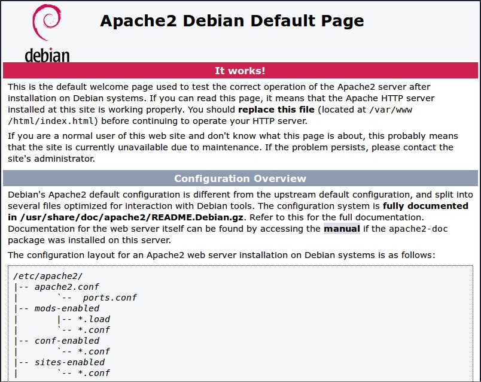
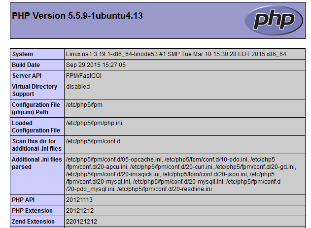

LAMP désigne un ensemble de 4 choses: 1) Linux 2) Un serveur web Apache 3) My-sql 4) Le langage de programmation php
Ces 4 technologies forment une pile (stack en anglais) vous permettant l'hebergement de vos sites ou de vos applications web dynamiques.
Dans ce tuto, nous allons voir comment mettre en place ces 4 outils et installer PhpMyAdmin afin de gérer notre Base De Données grâce à une interface graphique.
1) Des bases administratives sur Linux
Commençons par nous connecter à l'utilisateur "root" via la commande su.
Afin d'être sur que tous les packages puissent être installés, il faut mettre à jour votre système via cette commande:
apt update && apt upgrade -y
Maintenant, nous sommes sur qu'aucun problème en rapport avec des packages ne surviendra !
Pour des raisons pratiques mais également de sécurités, nous allons créer un nouvel utilisateur où nous gérerons et installerons notre serveur.
Pour créer l'utilisateur, il vous suffit de taper cette commande dans votre terminal:
adduser mynewuser
Ici, mynewuser sera notre nom d'utilisateur. Vous pouvez le remplacer par celui voulu.
Il vous sera demander plusieurs informations. Certaines optionnelles tels que votre numéro de téléphone ou votre nom par exemple, d'autres seront obligatoires, votre mot de passe par exemple.
Une fois notre utilisateur crée, il nous faut le rajouter au groupe sudo.
Pour cela, tapez cette commande:
usermod -aG sudo mynewuser
mynewuser étant mon nom d'utilisateur, remplacez le par celui crée.
Enfin, connectons nous à ce compte grâce à cette commande:
su - mynewuser
Maintenant que notre Linux est prêt, installons et configurons Apache
Nous allons installer la version 2. Pour ce faire, c'est très simple, il vous suffit de taper cette commande:
apt install apache2 apache2-doc
Si tout s'est bien passé, vous avez maintenant accès à une la page web par défaut d'Apache à cette adresse: localhost qui devrait ressembler à quelque chose dans ce genre 
Pour vérifier l'état du service Apache:
service apache2 status
Si la mention active (running) apparait, alors Apache est lancé.
Pour lancer Apache:
service apache2 start
Pour stopper Apache:
service apache2 stop
Pour relancer Appache:
service apache2 restart
Ici, nous utiliserons la version la plus récente de php, la version 5.
Pour l'installer, tapez cette commande:
sudo apt install php5-common libapache2-mod-php5 php5-cli
Pour vérifier notre installation, executez ces deux commandes:
cd /var/www/html
sudo nano info.php
L'éditeur nano vient de s'ouvrir dans votre terminal, recopiez les lignes ci dessous dans l'editeur:
<?php
phpinfo();
?>
Accédez ensuite au fichier via votre navigateur: localhost/info.php
Vous devriez voir une page listant toutes les spécifités de php ressemblant à ça 
Une fois ce test fais, je vous recommande vivement de supprimer le fichier info.php que nous venons de créer, en effet, il n'est pas recommandé de donner publiquement des détails sur votre configuration.
Attaquon nous maintenant au système de base de données.
sudo apt install mysql-server
Cette commande vous servira à installer MySQL.
Par défaut, le mot de passe de MySQL est le même que celui de votre utilisateur système.
Pour sécuriser votre base de données, voici la commande à taper:
mysql_secure_installation
Entrez votre mot de passe "root", puis changez le mot de passe:
Change the root password? [Y/n] => y
New password:
Desactivez maintenant les connexions anonymes:
Remove anonymous users? [Y/n] => y
Desactivez la connexion "root" à distance:
Disallow root login remotely? [Y/n] => y
Maintenant, nous devons effacer la base de données de test par défaut:
Remove test database and access to it? [Y/n] => y
Chargeons ensuite les nouveaux paramètres:
Reload privilege tables now? [Y/n] => y
Voici la commande pour tester l'accès à votre base de données:
`mysql -u root -p
MariaDB [(none)]> show databases; MariaDB [(none)]> exit`
La création de notre serveur LAMP est terminée, mais je vous conseil de suivre cette étape afin de gérer vos bases de données plus facilement. Bien entendu, c'est vous qui décidez ;).
Pour l'installer, tapez cette commande:
sudo apt install phpmyadmin
Cochez apache2 puis faites entrée. Acceptez l'aide à la configuration, puis rentrez le mot de passe que vous voulez.
Afin d'accéder à l'interface PhpMyAdmin, editez le fichier de configuration apache via cette commande:
sudo nano /etc/apache2/apache2.conf
A la fin du fichier, ajoutez ceci:
# Include phpMyAdmin
Include /etc/phpmyadmin/apache.conf
Relancez ensuite le serveur Apache grâce à cette commande:
sudo service apache2 restart
Pour vous connectez, vous devez créer un utilisateur possédant les droits administrateurs comme suit:
mysql -u root -p
[mot de passe]
MariaDB [(none)]> CREATE USER 'my_user'@'localhost' IDENTIFIED BY 'my_password';
MariaDB [(none)]> GRANT ALL PRIVILEGES ON * . * TO 'my_user'@'localhost';
MariaDB [(none)]> FLUSH PRIVILEGES;
Accédez ensuite à votre interface: localhost/phpmyadmin
Et voila ! Le tuto est fini. Si vous avez des question ou si vous voulez me donner votre avis ainsi que des idées de tuto ou d'améliorations, contactez moi sur discord: Yukio#6174